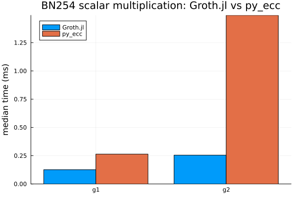
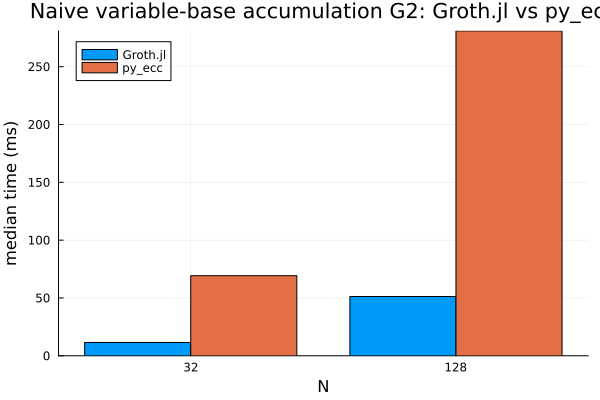
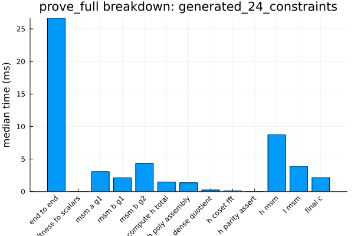

Benchmarks
The benchmarks/ project captures runtime and throughput measurements for the hottest Groth16 paths. This page summarises how to regenerate the data and shows the latest artefacts.
Running the Suite
Instantiate the root workspace:
julia --project=. -e 'using Pkg; Pkg.instantiate(workspace=true)'Run the benchmark harness (artifacts land under
benchmarks/artifacts/<run_id>/):julia --project=. benchmarks/run.jlFor a faster developer loop during primitive/backend work, use a filtered profile or an explicit group list:
julia --project=. benchmarks/run.jl --list-profiles julia --project=. benchmarks/run.jl --profile=quick julia --project=. benchmarks/run.jl --profile=stage3 julia --project=. benchmarks/run.jl --profile=stage5 julia --project=. benchmarks/run.jl --profile=stage7a julia --project=. benchmarks/run.jl --profile=stage8 julia --project=. benchmarks/run.jl --profile=stage8a julia --project=. benchmarks/run.jl --groups=bn254_primitives,bn254_polynomials,pairing_micro julia --project=. benchmarks/run.jl --groups=bn254_curve_kernels,batch_norm julia --project=. benchmarks/run.jl --groups=glv_scalar_tuning julia --project=. benchmarks/run.jl --groups=scalar_plumbingRegenerate plots (latest run by default, or pass a run id / JSON file):
julia --project=. benchmarks/plot.jl julia --project=. benchmarks/plot.jl 2026-03-05_144036Compare two snapshots and flag regressions (20% threshold by default):
julia --project=. benchmarks/compare.jl 2026-03-05_144036 2026-03-06_091500 julia --project=. benchmarks/compare.jl 2025-09-29_121914 2026-03-05_144036 10Profile the
prove_fullpath on the deterministic benchmark fixtures:julia --project=. benchmarks/profile_prove_full.jl julia --project=. benchmarks/profile_prove_full.jl --run-id=2026-03-05_144036 --fixture=sum_of_products_small --repetitions=75Generate a one-shot markdown report (run -> plot -> compare latest-1 vs latest):
julia --project=. benchmarks/report.jl julia --project=. benchmarks/report.jl --skip-run --threshold=10
The harness writes a timestamped JSON (raw statistics) and PNG charts covering direct BN254 field and tower primitives, direct G1/G2 add-double-affine kernels, BN254 Fr polynomial/domain helpers, scalar multiplication, the Stage 7A GLV scalar sweep, the Stage 8A prover scalar-plumbing comparison, MSM, pairing, normalisation, Groth16 end-to-end timings, and prove_full fixture breakdowns. The profiling script writes text profiler dumps under the same artifact tree, but profiling remains a separate workflow from reproducible timing baselines. For the Stage 8 prover baseline specifically, the benchmark fixtures now prove once, assert verify_full, and record deterministic proof points in the artifact _semantic section before any timing starts.
When the workspace also includes a sibling py_ecc/ checkout and python3 is available, the benchmark run additionally records matched BN254 primitive comparisons against py_ecc for G1/G2 scalar multiplication, naive variable-base accumulation, and a single pairing. These are primitive-only comparisons; they are not end-to-end Groth16 prover comparisons.
The benchmark artifact also contains a _semantic section with deterministic serialized outputs for the BN254 primitive fixtures and direct curve-kernel fixtures. The Stage 8 prove_full fixture run adds deterministic proof-point outputs there as well. Those records are not plotted, but they are kept so future backend migrations can compare exact results alongside timing data. The _meta section records whether the run was the default full suite or a filtered benchmark profile.
External Reference Summaries
The large raw benchmark artifacts under benchmarks/artifacts/ are intentionally ignored by git. Durable external-comparison numbers are summarized in docs/src/assets/external_benchmark_summary.json.
using JSON
summary_path = joinpath(@__DIR__, "assets", "external_benchmark_summary.json")
external_summary = JSON.parsefile(summary_path)
keys(external_summary)KeySet for a JSON.Object{String, Any} with 5 entries. Keys:
"generated_on"
"scope"
"notes"
"py_ecc"
"arkworks"py_ecc
The py_ecc comparison is a primitive-only BN254 comparison against the local sibling py_ecc/ checkout. It covers deterministic G1/G2 scalar multiplication, naive variable-base accumulation, and a single pairing. It is not a Groth16 prover comparison.
Latest preserved local summary: benchmarks/artifacts/2026-04-01_174825/ from branch feat/bn254-montgomery-stage7-msm-specialization on machine znver5. The raw artifact directory is ignored by git; the table below is the tracked summary.
| Workload | Groth.jl median | py_ecc median | Result |
|---|---|---|---|
| G1 scalar multiplication | 0.126 ms | 0.264 ms | Groth.jl 2.09x faster |
| G2 scalar multiplication | 0.255 ms | 1.492 ms | Groth.jl 5.85x faster |
| G1 naive accumulation, N=32 | 4.577 ms | 12.452 ms | Groth.jl 2.72x faster |
| G2 naive accumulation, N=32 | 11.512 ms | 69.238 ms | Groth.jl 6.01x faster |
| Single pairing | 3.140 ms | 149.689 ms | Groth.jl 47.67x faster |
The plots below are tracked copies of the PNGs generated for the same preserved 2026-04-01_174825 artifact; the benchmark was not rerun when these images were added to the docs.
| Scalar multiplication | Pairing |
|---|---|
 |  |
| G1 naive accumulation | G2 naive accumulation |
 |  |
Earlier py_ecc checkpoints explain the progression:
| Run | Meaning | Selected medians |
|---|---|---|
2026-03-31_212200 | First external primitive baseline | G1 scalar: Groth.jl 0.381 ms, py_ecc 0.278 ms; G2 scalar: Groth.jl 2.092 ms, py_ecc 1.497 ms; pairing: Groth.jl 51.616 ms, py_ecc 146.294 ms |
2026-03-31_215847 | After scalar multiplication tuning | G1 scalar: Groth.jl 0.250 ms, py_ecc 0.269 ms; G2 scalar: Groth.jl 1.522 ms, py_ecc 1.477 ms; pairing: Groth.jl 51.649 ms, py_ecc 147.931 ms |
arkworks
The arkworks comparison uses temporary deterministic one-off harnesses against the local ark-works/ checkout and local Groth.jl packages. The current tracked result asset is docs/src/assets/arkworks_benchmark_refresh_2026_05_11.json.
using JSON
arkworks_path = joinpath(@__DIR__, "assets", "arkworks_benchmark_refresh_2026_05_11.json")
arkworks_summary = JSON.parsefile(arkworks_path)
arkworks_summary["run_id"]"2026-05-11_arkworks_bn254_refresh"The refreshed local run was measured on an AMD Ryzen AI 9 HX 370 with Julia 1.12.5, Rust 1.91.1, and local arkworks path dependencies. Each value below is a median per operation.
| Workload | Groth.jl median | arkworks median | Result |
|---|---|---|---|
| G1 scalar multiplication | 0.115 ms | 0.00654 ms | arkworks 17.58x faster |
| G2 scalar multiplication | 0.223 ms | 0.0170 ms | arkworks 13.11x faster |
| G1 naive accumulation, N=32 | 3.462 ms | 0.182 ms | arkworks 18.98x faster |
| G2 naive accumulation, N=32 | 7.324 ms | 0.481 ms | arkworks 15.22x faster |
| Single pairing | 2.960 ms | 0.415 ms | arkworks 7.14x faster |
Interpretation: Groth.jl is now well beyond the original BigInt path and beats py_ecc on the preserved primitive comparison, but arkworks still leads on these matched BN254 primitive workloads. This is not an end-to-end Groth16 prover comparison.
Stage 8 Snapshot (2026‑04‑01)
The current Stage 8 prover re-baseline artifact is:
benchmarks/artifacts/2026-04-01_220953/results/benchmark_results.json
Relative to the last pre-Stage-8 prove_full baseline (2026-04-01_174156), the continuity fixture improved but the primary larger fixture stayed effectively flat:
sum_of_products_smallprove_full:9.219 ms -> 8.248 msfinal_c:4.015 ms -> 2.983 ms
generated_24_constraintsprove_full:30.045 ms -> 30.088 msfinal_c:4.072 ms -> 3.001 msmsm_b_g2:4.509 ms -> 4.714 msh_msm:7.310 ms -> 7.805 msl_msm:3.989 ms -> 4.210 ms
So the backend rewrite clearly reduced final proof assembly cost, but the current prover baseline says the next real wins still need to come from the MSM-heavy prover buckets rather than from final_c.
Stage 8A Snapshot (2026‑04‑02)
The Stage 8A scalar-plumbing follow-through artifacts are:
benchmarks/artifacts/2026-04-01_223814/results/benchmark_results.jsonbenchmarks/artifacts/2026-04-01_223859/results/benchmark_results.json
Stage 8A removed the prover’s hot BN254Fr -> BigInt scalar conversions and then reran the prove_full baseline.
On the direct scalar-plumbing comparison for the main deterministic fixture:
scalar_mul(delta_g1, r):0.737 ms -> 0.720 msscalar_mul(delta_g2, s):2.442 ms -> 2.355 msA_queryMSM:3.019 ms -> 2.937 msB_query_g2MSM:4.477 ms -> 4.299 msHMSM:7.198 ms -> 7.128 msLMSM:3.993 ms -> 3.873 ms
Relative to the first Stage 8 prove_full baseline (2026-04-01_220953):
generated_24_constraintsprove_full:30.088 ms -> 28.873 msmsm_b_g2:4.714 ms -> 4.334 msh_msm:7.805 ms -> 7.036 msl_msm:4.210 ms -> 3.856 msfinal_c:3.001 ms -> 2.804 ms
sum_of_products_smallprove_full:8.248 ms -> 8.614 ms
The most important profiler result is qualitative as well as quantitative: the main Stage 8A prove_full dump no longer contains canonical_bigint or limbs_to_bigint. The prover still creates BigInts elsewhere, but the measured hot prover scalar-conversion path identified in Stage 8 is now gone.
QAP Domain, H Quotient, and H/L MSM Snapshot (2026-05-11)
The latest QAP-domain-aligned Stage 8 prover fixture run is:
- tracked summary:
docs/src/assets/prove_full_msm_tuning_2026_05_11.json - local full artifact:
benchmarks/artifacts/2026-05-11_165756/results/benchmark_results.json
This run uses the arkworks-shaped QAP domain: active constraints first, public-input selector rows next, and zero padding to the next power of two. prove_full computes H through the coset-only quotient path and now combines the H and L contributions into one G1 MSM because the C proof element only uses H + L. The checked dense/coset helper remains covered by tests. The fixture setup still proves once and asserts verify_full before timing.
sum_of_products_small- constraints/public/domain:
3 / 6 / 16 prove_full:10.943 mscompute_h_total:0.234 msh_msm:5.458 msl_msm:0.055 msh_l_msm:5.619 msfinal_c:2.133 ms
- constraints/public/domain:
generated_24_constraints- constraints/public/domain:
24 / 8 / 32 prove_full:26.643 mscompute_h_total:1.481 msh_msm:8.726 msl_msm:3.871 msh_l_msm:11.029 msfinal_c:2.140 ms
- constraints/public/domain:
The generated fixture MSM selections recorded in the tracked summary are:
| Query | Size | Selected backend |
|---|---|---|
| A query G1 | 28 | pippenger_w3 |
| A/B1 fused G1 | 28 | pippenger_pair_w2 |
| B query G2 | 28 | pippenger_w2 |
| H query G1 | 31 | pippenger_w3 |
| L query G1 | 20 | pippenger_w3 |
| H+L query G1 | 51 | pippenger_w5 |
| Generated fixture | Small fixture |
|---|---|
 |  |
Interpretation: the small fixture intentionally gets a larger domain because 3 constraints + 6 public rounds up to 16, so it is no longer directly comparable to the old constraint-only domain timing. The larger fixture already rounds to 32, so it remains the better continuity fixture for prover-shaped tuning. Relative to the previous coset-only H baseline 2026-05-11_133047, the generated fixture improved prove_full by 6.96% and final_c by 5.14%.
Setup Query Generation Snapshot (2026-05-11)
The setup-focused artifact is:
- tracked summary:
docs/src/assets/setup_full_tuning_2026_05_11.json - local full artifact:
benchmarks/artifacts/2026-05-11_175228/results/benchmark_results.json
The setup profile times setup_full on the same deterministic fixtures used by the prover benchmark. It proves and verifies once per fixture before timing, so the measured keys are checked for end-to-end Groth16 usability.
| Fixture | Domain | Baseline median | Current median | Change |
|---|---|---|---|---|
sum_of_products_small | 16 | 47.910 ms | 46.007 ms | -3.97% |
generated_24_constraints | 32 | 142.715 ms | 116.918 ms | -18.08% |
Interpretation: the setup sweep showed that G1 fixed-base w-NAF is not the best choice for the full-width setup scalars in these fixtures. setup_full now uses the BN254 G1 scalar dispatcher, whose GLV path is faster for those scalars, while the G2 query uses a wider fixed-window batch path. The generated fixture is again the better continuity signal because it exercises a larger set of query scalars.
Safe G2 Subgroup GLV Snapshot (2026-05-11)
The safe G2 GLV exposure artifact is:
- tracked summary:
docs/src/assets/g2_subgroup_glv_tuning_2026_05_11.json - local full artifact:
benchmarks/artifacts/2026-05-11_190310/results/benchmark_results.json
This run keeps generic G2 scalar_mul on the arbitrary-point w-NAF path and measures the explicit subgroup-only GLV helper separately. Groth16 setup/proving use the helper only for G2 key points whose subgroup ownership follows from construction.
| Scalar bits | G2 default | G2 w-NAF | G2 subgroup GLV |
|---|---|---|---|
32 | 0.335 ms | 0.314 ms | 0.335 ms |
64 | 0.525 ms | 0.530 ms | 0.554 ms |
128 | 1.014 ms | 1.072 ms | 1.504 ms |
192 | 1.544 ms | 1.632 ms | 1.609 ms |
254 | 2.455 ms | 2.440 ms | 1.612 ms |
Interpretation: the explicit G2 GLV path is not a universal scalar-mul default; it is useful for the full-width subgroup-owned scalars used by setup/proving. The scalar_plumbing fixture reported g2_subgroup_scalar_mul(delta_g2, s) at 1.549 ms for BN254Fr, versus 2.355 ms for the earlier generic G2 scalar path in the Stage 8A notes. Verifier subgroup checks still use generic G2 scalar multiplication because proof inputs are untrusted.
G1 GLV-MSM Prover Snapshot (2026-05-11)
The G1 GLV-MSM prover artifact is:
- tracked summary:
docs/src/assets/g1_glv_msm_tuning_2026_05_11.json - local full artifact:
benchmarks/artifacts/2026-05-11_193033/results/benchmark_results.json
This run routes only the combined H/L G1 prover MSM through explicit BN254 G1 GLV decomposition. The A/B1 fused query MSM was checked separately and did not improve, so it remains on the existing fused pair MSM path.
| Fixture | Generic H/L MSM | G1 GLV H/L MSM | Phase change | prove_full |
|---|---|---|---|---|
sum_of_products_small | 6.642 ms | 4.924 ms | -25.87% | 11.594 ms |
generated_24_constraints | 11.907 ms | 9.647 ms | -18.98% | 27.626 ms |
For the generated fixture, the H/L query has 51 original bases and expands to 90 GLV terms with maximum component width 127 bits. Interpretation: the MSM phase improvement is clear, but end-to-end proving is essentially flat relative to the preceding same-day run (27.659 ms -> 27.626 ms). The next GLV follow-through is limb-native decomposition; the current helper still pays BigInt decomposition cost.
Latest Snapshot (2025‑09‑29)
using JSON
json_path = joinpath(@__DIR__, "assets", "results_2025-09-29_121914.json")
results = JSON.parsefile(json_path)
keys(results)KeySet for a JSON.Object{String, Any} with 9 entries. Keys:
"pairing"
"fixed_g2"
"msm_g2"
"pairing_single"
"norm_g2"
"groth16"
"norm_g1"
"msm_g1"
"fixed_g1"Each entry contains per-benchmark medians, deviations, and configuration metadata (threading, window sizes, curve parameters). Refer to benchmarks/results_2025-09-23_204214_env.md for the environment capture that accompanied the latest run.
Plots